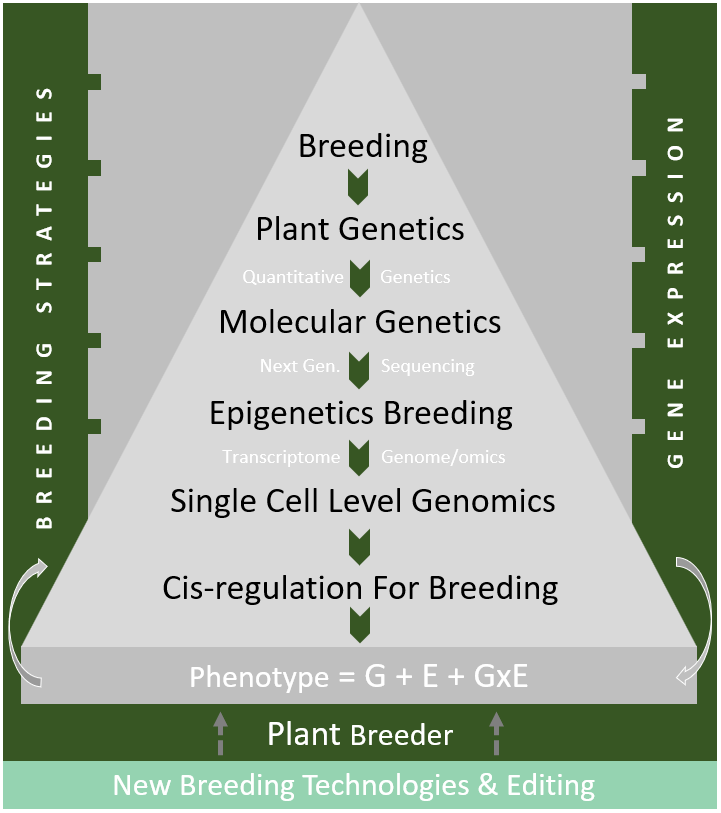
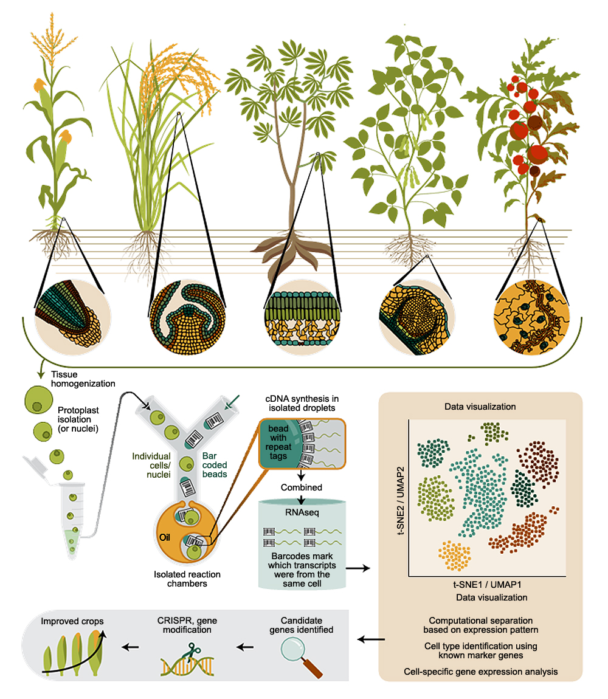
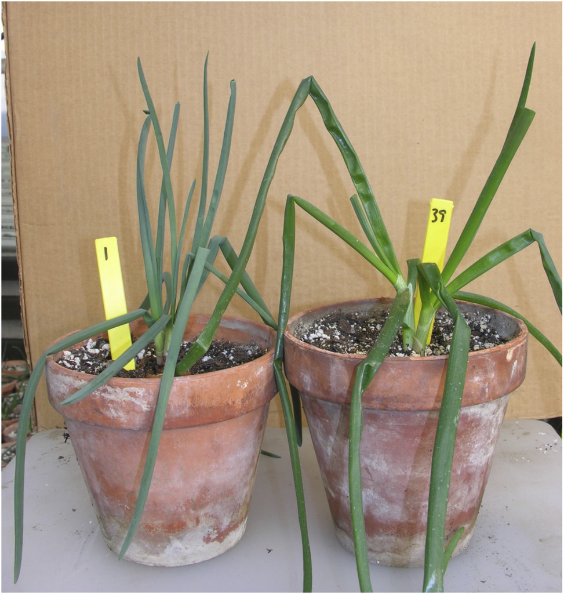
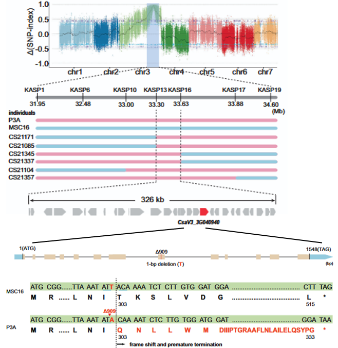

Munaiz Team
Led by Dr. Eduardo D. Munaiz, Associate Professor and Team Leader
Our goal is to translate genomics, biotechnology, and genetic discoveries into practical applications, contributing to breeding efficiency and sustainable agriculture.

Research Projects
Breed-E-Omics: Genomics approaches of Spelt for a sustainable agriculture
Project Lead: ED Munaiz · FEADER-DADR-2024-029390 · Project page
IMGOW: Implementation of molecular, genetic, and omic studies in a wheat breeding program
Project Lead: ED Munaiz · CIFRE 2024/1441
BLEDIV: Molecular marker development in organic wheat breeding
Project Lead: ED Munaiz · Partner Select Orvilliers
Vegetable Genetics: Molecular, genomics & organellar genetics at the intersection of physiological and disease resilience breeding
Project Lead: ED Munaiz Example



Selected publications
A selection of research contributions in plant genetics, genomics and crop improvement.
Genetics Has Enabled the Improvement of Breeding Strategies: Single-Cell Analysis, Epigenetics, cis-Regulation and Gene Editing to Exploit Genetic Variants Underlying Phenotypes
Crop Breeding, Genetics and Genomics, 8 (2) (2026), e260015
2026Implications of mtDNA in CMS Systems in Hybrid Selections: Interactions Between the Nuclear and the Mitochondrial Genomes
Interdisciplinary Insights from RECROP, DIVERSICROP and PANGEOS (2026)
2026Interactions entre le génome nucléaire et le génome mitochondrial : Implications du mtADN dans le système CMS en sélection hybride
Association de Sélectionneurs Français (2026)
2025Performance of drought-tolerant maize for silage or grain in conventional and Kura clover perennial groundcover cropping systems
Agrosystems, Geosciences & Environment, 8 (2025), e70255, 1–9
2025A nuclear-encoded endonuclease governs the paternal transmission of mitochondria in Cucumis plants
Nature Communications, 16 (2025), 4266
2024Integrative approaches to enhance reproductive resilience of crops for climate-proof agriculture
Plant Stress, 15 (2024), 100704, 1–25
2024Two Different Strategies for Breeding Resilient Crops: High-throughput Studies of Epicuticular Waxes, and Stay-green Genetic Studies
Reproductive Enhancement of Crop Resilience to Extreme Climate (RECROP) (2024)
2023Application and Expansion of Virus-Induced Gene Silencing for Functional Studies in Vegetables
Horticulturae, 9 (8) (2023), 934
2021Precision Mapping of a Maize MAGIC Population Identified a Candidate Gene for the Senescence-Associated Physiological Traits
Frontiers in Genetics, 12 (2021), 716821
2021Application of Metabolomics to Food Systems
Foodomics: Omic Strategies and Applications in Food Science (2021), 416-442
2021Genetic Analysis of the Unique Epicuticular Wax Profile of ‘Odourless Greenleaf’ Onion
Journal of the American Society for Horticultural Science, 146 (2) (2021), 118–124
2021Genetic Diversity for Dual Use Maize: Grain and Second-Generation Biofuel
Agronomy, 11 (2) (2021), 230
2020Reflectance Spectroscopy for Non-Destructive Measurement and Genetic Analysis of Amounts and Types of Epicuticular Waxes on Onion Leaves
Molecules, 25(15) (2020), 3454
2020The Senescence (Stay-Green)—An Important Trait to Exploit Crop Residuals for Bioenergy
Energies, 13(4) (2020), 790
2020Genetic Analyses of Epicuticular Waxes Associated with the Glossy Foliage of ‘White Persian’ Onion
Journal of the American Society for Horticultural Science, 145(1) (2020), 67–72
2019Amounts and Types of Epicuticular Leaf Waxes Among Onion Accessions Selected for Reduced Damage by Onion Thrips
Journal of the American Society for Horticultural Science, 145(1) (2020), 30–35
2018QTL Mapping of Epicuticular Waxes to Understand the gl Locus of Onion
Population, Evolutionary and Quantitative Genetics Conference, May 13–15 (2018)
Meet the Team
Dr. Eduardo D. Munaiz
Leader · Associate Professor of Genetics & Plant Breeding
He is a geneticist with more than 15 years’ experience in the private and public sector. Dr. Eduardo D. Munaiz research program focuses on genetics improvement, breeding and genomics for crop resilience. He leads specific projects involving molecular tagging of major yield-quality attributes and disease resistance in wheat, maize and vegetables (Allium cepa) by integrating new breeding technologies, cutting-edge transcriptomics, and advanced predictive computational methods. His goal is to translate biotechnology, genomics and genetic discoveries into practical applications, contributing to sustainable agriculture and food security. He is also appointed as member of the board of directors of the National Association of Breeders France (ASF).
Current Members
Alumni
Teaching & Mentoring
Dr. Eduardo D. Munaiz lectures courses at the intersect of breeding, molecular genetics and plant physiology.
- Breeding Strategies (Master level)
- Genetics (Master level)
- Plant Ecophysiology (Master level)
- Population Genetics (Master level)
- Epigenetics in Crop Breeding (Master level)
He also collaborates as expert in other courses of bachelor’s degree and master’s Plant breeding.
Dr. Eduardo D. Munaiz has mentored more than 25 internship students with industry partners such as Bayer, Syngenta, Lemaire Deffontaines, KWS, Van Waveren Saaten, RAGT, Linéa Semences, CIRAD, Arvalis, INRAE, Enza Zaden, Rijk Zwaan, etc.
He has served as president of numerous jury’s Master defenses.
Get in Touch
Interested in scientific collaboration, industry partnerships, or joining my team as a PhD student or postdoc? We welcome enquiries.
For prospective graduate students: please review our open projects and include a brief research statement with your enquiry.